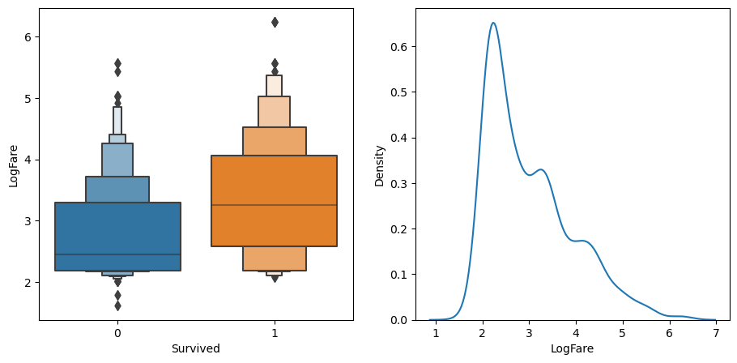

# import required package
from fastai.imports import *
# optimize display settings
np.set_printoptions(linewidth=130)Random Forests
This is my follow up to the first part of Lesson 6: Practical Deep Learning for Coders 2022 in which Jeremy introduces Decision Trees and Random Forests.
For tabular data (i.e data that looks like spreadsheet or database tables, such as the data for the Titanic competition) it’s more common to see good results by using ensembles of decision trees, such as Random Forests and Gradient Boosting Machines. In this notebook, we’re going to learn all about Random Forests, by building one from scratch, and using it to submit to the Titanic competition!
We’ll start by importing the basic set of libraries we normally need for data science work, and setting numpy to use our display space more efficiently:
Now let’s create DataFrames from the CSV files and carry out some preprocessing:
# grab our data from Kaggle
import os
iskaggle = os.environ.get('KAGGLE_KERNEL_RUN_TYPE', '')
if iskaggle: path = Path('../input/titanic')
else:
import zipfile,kaggle
path = Path('titanic')
kaggle.api.competition_download_cli(str(path))
zipfile.ZipFile(f'{path}.zip').extractall(path) titanic.zip: Skipping, found more recently modified local copy (use --force to force download)# read in our training and test datasets
df = pd.read_csv(path/'train.csv')
tst_df = pd.read_csv(path/'test.csv')
# let's see what is the most common value for each colums
modes = df.mode().iloc[0]
modesPassengerId 1
Survived 0.0
Pclass 3.0
Name Abbing, Mr. Anthony
Sex male
Age 24.0
SibSp 0.0
Parch 0.0
Ticket 1601
Fare 8.05
Cabin B96 B98
Embarked S
Name: 0, dtype: objectOne difference with Random Forests however is that we don’t generally have to create dummy variables like we do for non-numeric columns in linear models and neural networks. Instead, we can just convert those fields to categorical variables, which internally in Pandas makes a list of all the unique values in the column, and replaces each value with a number. The number is just an index for looking up the value in the list of all unique values.
df.dtypesPassengerId int64
Survived int64
Pclass int64
Name object
Sex object
Age float64
SibSp int64
Parch int64
Ticket object
Fare float64
Cabin object
Embarked object
dtype: object# create a function to carry out some preprocessing
def proc_data(df):
df['Fare'] = df.Fare.fillna(0) # replace Fare Na with 0
df.fillna(modes, inplace=True)
df['LogFare'] = np.log1p(df['Fare']) # take log of fares and add 1 - normalization
df['Embarked'] = pd.Categorical(df.Embarked) # convert embaked column to categorical
df['Sex'] = pd.Categorical(df.Sex) # convert sex column to categorical# apply our pre-processign function to our training set
proc_data(df)
# apply our pre-processign function to our test set
proc_data(tst_df)df| PassengerId | Survived | Pclass | Name | Sex | Age | SibSp | Parch | Ticket | Fare | Cabin | Embarked | LogFare | |
|---|---|---|---|---|---|---|---|---|---|---|---|---|---|
| 0 | 1 | 0 | 3 | Braund, Mr. Owen Harris | male | 22.0 | 1 | 0 | A/5 21171 | 7.2500 | B96 B98 | S | 2.110213 |
| 1 | 2 | 1 | 1 | Cumings, Mrs. John Bradley (Florence Briggs Thayer) | female | 38.0 | 1 | 0 | PC 17599 | 71.2833 | C85 | C | 4.280593 |
| 2 | 3 | 1 | 3 | Heikkinen, Miss. Laina | female | 26.0 | 0 | 0 | STON/O2. 3101282 | 7.9250 | B96 B98 | S | 2.188856 |
| 3 | 4 | 1 | 1 | Futrelle, Mrs. Jacques Heath (Lily May Peel) | female | 35.0 | 1 | 0 | 113803 | 53.1000 | C123 | S | 3.990834 |
| 4 | 5 | 0 | 3 | Allen, Mr. William Henry | male | 35.0 | 0 | 0 | 373450 | 8.0500 | B96 B98 | S | 2.202765 |
| ... | ... | ... | ... | ... | ... | ... | ... | ... | ... | ... | ... | ... | ... |
| 886 | 887 | 0 | 2 | Montvila, Rev. Juozas | male | 27.0 | 0 | 0 | 211536 | 13.0000 | B96 B98 | S | 2.639057 |
| 887 | 888 | 1 | 1 | Graham, Miss. Margaret Edith | female | 19.0 | 0 | 0 | 112053 | 30.0000 | B42 | S | 3.433987 |
| 888 | 889 | 0 | 3 | Johnston, Miss. Catherine Helen "Carrie" | female | 24.0 | 1 | 2 | W./C. 6607 | 23.4500 | B96 B98 | S | 3.196630 |
| 889 | 890 | 1 | 1 | Behr, Mr. Karl Howell | male | 26.0 | 0 | 0 | 111369 | 30.0000 | C148 | C | 3.433987 |
| 890 | 891 | 0 | 3 | Dooley, Mr. Patrick | male | 32.0 | 0 | 0 | 370376 | 7.7500 | B96 B98 | Q | 2.169054 |
891 rows × 13 columns
We’ll make a list of the continuous, categorical, and dependent variables. Note that we no longer consider pclass a categorical variable. That’s because it’s ordered (i.e 1st, 2nd, and 3rd class have an order), and decision trees, as we’ll see, only care about order, not about absolute value.
# set our categorical variables
cats=["Sex","Embarked"]
# set our continuous variables
conts=['Age', 'SibSp', 'Parch', 'LogFare',"Pclass"]
# set our dependent(target/y) variable
dep="Survived"Even although we’ve made the cats columns categorical, they are still shown by Pandas as their original values:
# take a look at first 5 rows of sex column
df.Sex.head()0 male
1 female
2 female
3 female
4 male
Name: Sex, dtype: category
Categories (2, object): ['female', 'male']However behind the scenes they’re now stored as integers, with indices that are looked up in the Categories list shown in the output above. We can view the stored values by looking in the pandas **cat.codes** attribute:
# take a look at indexes applied to values in first 5 rows of sex column
df.Sex.cat.codes.head()0 1
1 0
2 0
3 0
4 1
dtype: int8Binary splits
Before we create a Random Forest or Gradient Boosting Machine, we’ll first need to learn how to create a decision tree, from which both of these models are built. And to create a decision tree, we’ll first need to create a binary split, since that’s what a decision tree is built from.
A binary split is where all rows are placed into one of two groups, based on whether they’re above or below some threshold of some column. For example, we could split the rows of our dataset into males and females, by using the threshold 0.5 and the column Sex (since the values in the column are 0 for female and 1 for male). We can use a plot to see how that would split up our data – we’ll use the Seaborn library, which is a layer on top of matplotlib that makes some useful charts easier to create, and more aesthetically pleasing by default:
Split by Sex
# import required package for plotting
import seaborn as sns# create side by side histograms
fig,axs = plt.subplots(1,2, figsize=(11,5))
# survival rate histogram by sex - axs[0] so this is first plot
sns.barplot(data=df, y=dep, x="Sex", ax=axs[0]).set(title="Survival rate")
# countplot by sex - axs[1] so this is second plot
sns.countplot(data=df, x="Sex", ax=axs[1]).set(title="Histogram");df['Sex'].value_counts()male 577
female 314
Name: Sex, dtype: int64df['Survived'].sum()342Here we see that (on the left) if we split the data into males and females, we’d have groups that have very different survival rates: >70% for females, and <20% for males. We can also see (on the right) that the split would be reasonably even, with over 300 passengers (out of 891) in each group.
We could create a very simple “model” which simply says that all females survive, and no males do. To do so, we better first split our data into a training and validation set, to see how accurate this approach turns out to be:
# import required packages
from numpy import random
from sklearn.model_selection import train_test_split# set seee for reproducibility
random.seed(42)
# create training & validation sets
trn_df,val_df = train_test_split(df, test_size=0.25)
# replace categorical variables with their integer codes
trn_df[cats] = trn_df[cats].apply(lambda x: x.cat.codes)
val_df[cats] = val_df[cats].apply(lambda x: x.cat.codes)trn_df| PassengerId | Survived | Pclass | Name | Sex | Age | SibSp | Parch | Ticket | Fare | Cabin | Embarked | LogFare | |
|---|---|---|---|---|---|---|---|---|---|---|---|---|---|
| 298 | 299 | 1 | 1 | Saalfeld, Mr. Adolphe | 1 | 24.00 | 0 | 0 | 19988 | 30.5000 | C106 | 2 | 3.449988 |
| 884 | 885 | 0 | 3 | Sutehall, Mr. Henry Jr | 1 | 25.00 | 0 | 0 | SOTON/OQ 392076 | 7.0500 | B96 B98 | 2 | 2.085672 |
| 247 | 248 | 1 | 2 | Hamalainen, Mrs. William (Anna) | 0 | 24.00 | 0 | 2 | 250649 | 14.5000 | B96 B98 | 2 | 2.740840 |
| 478 | 479 | 0 | 3 | Karlsson, Mr. Nils August | 1 | 22.00 | 0 | 0 | 350060 | 7.5208 | B96 B98 | 2 | 2.142510 |
| 305 | 306 | 1 | 1 | Allison, Master. Hudson Trevor | 1 | 0.92 | 1 | 2 | 113781 | 151.5500 | C22 C26 | 2 | 5.027492 |
| ... | ... | ... | ... | ... | ... | ... | ... | ... | ... | ... | ... | ... | ... |
| 106 | 107 | 1 | 3 | Salkjelsvik, Miss. Anna Kristine | 0 | 21.00 | 0 | 0 | 343120 | 7.6500 | B96 B98 | 2 | 2.157559 |
| 270 | 271 | 0 | 1 | Cairns, Mr. Alexander | 1 | 24.00 | 0 | 0 | 113798 | 31.0000 | B96 B98 | 2 | 3.465736 |
| 860 | 861 | 0 | 3 | Hansen, Mr. Claus Peter | 1 | 41.00 | 2 | 0 | 350026 | 14.1083 | B96 B98 | 2 | 2.715244 |
| 435 | 436 | 1 | 1 | Carter, Miss. Lucile Polk | 0 | 14.00 | 1 | 2 | 113760 | 120.0000 | B96 B98 | 2 | 4.795791 |
| 102 | 103 | 0 | 1 | White, Mr. Richard Frasar | 1 | 21.00 | 0 | 1 | 35281 | 77.2875 | D26 | 2 | 4.360388 |
668 rows × 13 columns
Now we can create our independent variables (the x variables) and dependent (the y variable):
# create a function
def xs_y(df):
xs = df[cats+conts].copy() # independent variables are catoegorical and continuous
return xs,df[dep] if dep in df else None # return independent variables, dependent variable# apply function to training & validation sets
trn_xs,trn_y = xs_y(trn_df)
val_xs,val_y = xs_y(val_df)# check last 5 rows of our training set
trn_xs.tail()| Sex | Embarked | Age | SibSp | Parch | LogFare | Pclass | |
|---|---|---|---|---|---|---|---|
| 106 | 0 | 2 | 21.0 | 0 | 0 | 2.157559 | 3 |
| 270 | 1 | 2 | 24.0 | 0 | 0 | 3.465736 | 1 |
| 860 | 1 | 2 | 41.0 | 2 | 0 | 2.715244 | 3 |
| 435 | 0 | 2 | 14.0 | 1 | 2 | 4.795791 | 1 |
| 102 | 1 | 2 | 21.0 | 0 | 1 | 4.360388 | 1 |
# check last 5 rows of our validation set
val_xs.tail()| Sex | Embarked | Age | SibSp | Parch | LogFare | Pclass | |
|---|---|---|---|---|---|---|---|
| 880 | 0 | 2 | 25.0 | 0 | 1 | 3.295837 | 2 |
| 425 | 1 | 2 | 24.0 | 0 | 0 | 2.110213 | 3 |
| 101 | 1 | 2 | 24.0 | 0 | 0 | 2.185579 | 3 |
| 199 | 0 | 2 | 24.0 | 0 | 0 | 2.639057 | 2 |
| 424 | 1 | 2 | 18.0 | 1 | 1 | 3.054591 | 3 |
Here’s the predictions for our extremely simple model, where female is coded as 0:
# set predictions for survival for validation set as Sex = female
preds = val_xs.Sex==0We’ll use mean absolute error to measure how good this model is:
# import required package for our metric and calculate
from sklearn.metrics import mean_absolute_error
mean_absolute_error(val_y, preds)0.21524663677130046Split by LogFare
Alternatively, we could try splitting on a continuous column. We have to use a somewhat different chart to see how this might work – here’s an example of how we could look at LogFare using a boxenplot and kernel density estimate(KDE) plot:
# create subset of data to include only logfare
df_fare = trn_df[trn_df.LogFare>0]
fig,axs = plt.subplots(1,2, figsize=(11,5))
# create a boxenplot of logfare v survived
sns.boxenplot(data=df_fare, x=dep, y="LogFare", ax=axs[0])
# create a kernel density estimate plot
sns.kdeplot(data=df_fare, x="LogFare", ax=axs[1]);
The boxenplot (above left) shows quantiles of LogFare for each group - didn’t survive Survived==0, and did survive, Survived==1. It shows that the average LogFare for passengers that didn’t survive is around 2.5, and for those that did it’s around 3.2. So it seems that people that paid more for their tickets were more likely to get put on a lifeboat.
Let’s create a simple model based on this observation:
# set prediction for survival for validation set as > 2.7 logfare
preds = val_xs.LogFare>2.7…and test it out:
mean_absolute_error(val_y, preds) # binary split based on sex 0.215246636771300460.336322869955157This is quite a bit less accurate than our model that used Sex as the single binary split.
Ideally, we’d like some way to try more columns and breakpoints more easily. We could create a function that returns how good our model is, in order to more quickly try out a few different splits. We’ll create a score function to do this. Instead of returning the mean absolute error, we’ll calculate a measure of impurity – that is, how much the binary split creates two groups where the rows in a group are each similar to each other, or dissimilar.
We can measure the similarity of rows inside a group by taking the standard deviation of the dependent variable. If it’s higher, then it means the rows are more different to each other. We’ll then multiply this by the number of rows, since a bigger group has more impact than a smaller group:
# create a function to calculate IMPURITY score
def _side_score(side, y):
tot = side.sum()
if tot<=1: return 0
return y[side].std()*totNow we’ve got that written, we can calculate the score for a split by adding up the scores for the “left hand side” (lhs) and “right hand side” (rhs):
# create a fucntion to calculate score for a split
def score(col, y, split):
lhs = col<=split
return (_side_score(lhs,y) + _side_score(~lhs,y))/len(y)For instance, here’s the impurity score for the split on Sex:
# apply our score function to a split based on Sex
score(trn_xs["Sex"], trn_y, 0.5)0.40787530982063946and for LogFare:
# apply our score function to a split based on LogFare
score(trn_xs["LogFare"], trn_y, 2.7) # score based on split by sex 0.407875309820639460.47180873952099694A higher score means the values within the split are more different to eacch other i.e. impure, so as we’d expect from our earlier tests, Sex appears to be a better split as it has a lower impurity score. To make it easier to find the best binary split, we can create a simple interactive tool (note that this only works in Kaggle if you click “Copy and Edit” in the top right to open the notebook editor):
# create interactve tool to play around with splits
from ipywidgets import interact
# create function that shows score for chosen splits
def iscore(nm, split):
col = trn_xs[nm]
return score(col, trn_y, split)# set variables (nm) to play around with as our continuous variables
# set initial split point
interact(nm=conts, split=15.5)(iscore);Try selecting different columns and split points using the dropdown and slider above. What splits can you find that increase the purity of the data?
We can do the same thing for the categorical variables:
# set variables (nm) to play around with as our cotegorical variables
# set initial split point
interact(nm=cats, split=2)(iscore);That works well enough, but it’s rather slow and fiddly. Perhaps we could get the computer to automatically find the best split point for a column for us? For example, to find the best split point for age we’d first need to make a list of all the possible split points (i.e all the unique values of that field) :
# obtain all unique age values
nm = "Age"
col = trn_xs[nm]
unq = col.unique()
unq.sort()
unqarray([ 0.42, 0.67, 0.75, 0.83, 0.92, 1. , 2. , 3. , 4. , 5. , 6. , 7. , 8. , 9. , 10. , 11. , 12. ,
13. , 14. , 14.5 , 15. , 16. , 17. , 18. , 19. , 20. , 21. , 22. , 23. , 24. , 24.5 , 25. , 26. , 27. ,
28. , 28.5 , 29. , 30. , 31. , 32. , 32.5 , 33. , 34. , 34.5 , 35. , 36. , 36.5 , 37. , 38. , 39. , 40. ,
40.5 , 41. , 42. , 43. , 44. , 45. , 45.5 , 46. , 47. , 48. , 49. , 50. , 51. , 52. , 53. , 54. , 55. ,
55.5 , 56. , 57. , 58. , 59. , 60. , 61. , 62. , 64. , 65. , 70. , 70.5 , 74. , 80. ])…and find which index of those values is where score() is the lowest:
scores = np.array([score(col, trn_y, o) for o in unq if not np.isnan(o)]) # use list comprehension rather than for loop
unq[scores.argmin()] # grab lowest score 6.0Based on this, it looks like, for instance, that for the Age column, 6 is the optimal cutoff according to our training set. We can write a little function that implements this idea:
# create function that pulls this idea together
def min_col(df, nm):
col,y = df[nm],df[dep]
unq = col.dropna().unique()
scores = np.array([score(col, y, o) for o in unq if not np.isnan(o)])
idx = scores.argmin()
return unq[idx],scores[idx] # return value that gives lowest score, and that score# find age value that gives lowest impurity score
min_col(trn_df, "Age")(6.0, 0.478316717508991)Let’s try all the columns:
# combine categorical and continuous as previously defined
cols = cats+conts
# return col name: and then result from function i.e (split value that gives lowest score, and that score)
{o:min_col(trn_df, o) for o in cols}{'Sex': (0, 0.40787530982063946),
'Embarked': (0, 0.47883342573147836),
'Age': (6.0, 0.478316717508991),
'SibSp': (4, 0.4783740258817434),
'Parch': (0, 0.4805296527841601),
'LogFare': (2.4390808375825834, 0.4620823937736597),
'Pclass': (2, 0.46048261885806596)}According to this, Sex<=0 is the best split we can use.
We’ve just re-invented the OneR classifier (or at least, a minor variant of it), which was found to be one of the most effective classifiers in real-world datasets, compared to the algorithms in use in 1993. Since it’s so simple and surprisingly effective, it makes for a great baseline – that is, a starting point that you can use to compare your more sophisticated models to.
We found earlier that out OneR rule had an error of around 0.215, so we’ll keep that in mind as we try out more sophisticated approaches.
Creating a decision tree
How can we improve our OneR classifier, which predicts survival based only on Sex?
How about we take each of our two groups, female and male, and create one more binary split for each of them. That is: find the single best split for females, and the single best split for males. To do this, all we have to do is repeat the previous section’s steps, once for males, and once for females.
First, we’ll remove Sex from the list of possible splits (since we’ve already used it, and there’s only one possible split for that binary column), and create our two groups:
# remove Sex column from our previous defined cols
cols.remove("Sex")
# create ouur 2 groups males and females
ismale = trn_df.Sex==1
males,females = trn_df[ismale],trn_df[~ismale]Now let’s find the single best binary split for males:
# return col name: and then result from function i.e (split value that gives lowest score, and that score)
{o:min_col(males, o) for o in cols}{'Embarked': (0, 0.3875581870410906),
'Age': (6.0, 0.3739828371010595),
'SibSp': (4, 0.3875864227586273),
'Parch': (0, 0.3874704821461959),
'LogFare': (2.803360380906535, 0.3804856231758151),
'Pclass': (1, 0.38155442004360934)}…and for females:
# return col name: and then result from function i.e (split value that gives lowest score, and that score)
{o:min_col(females, o) for o in cols}{'Embarked': (0, 0.4295252982857327),
'Age': (50.0, 0.4225927658431649),
'SibSp': (4, 0.42319212059713535),
'Parch': (3, 0.4193314500446158),
'LogFare': (4.256321678298823, 0.41350598332911376),
'Pclass': (2, 0.3335388911567601)}We can see that the next best binary split for males is Age<=6 and for females is Pclass<=2.
By adding these rules, we have created a decision tree, where our model will first check whether Sex is female or male, and depending on the result will then check either the above Age or Pclass rules, as appropriate. We could then repeat the process, creating new additional rules for each of the four groups we’ve now created.
Rather than writing that code manually, we can use DecisionTreeClassifier, from sklearn, which does exactly that for us:
# import decision tree classifier and graphical
from sklearn.tree import DecisionTreeClassifier, export_graphviz
import graphviz# fit a decision tree to our training data
m = DecisionTreeClassifier(max_leaf_nodes=4).fit(trn_xs, trn_y);# create a function that draws decision tree
def draw_tree(t, df, size=10, ratio=0.6, precision=2, **kwargs):
s=export_graphviz(t, out_file=None, feature_names=df.columns, filled=True, rounded=True,
special_characters=True, rotate=False, precision=precision, **kwargs)
return graphviz.Source(re.sub('Tree {', f'Tree {{ size={size}; ratio={ratio}', s))# draw decision teee based on
draw_tree(m, trn_xs, size=10)
- The first split looks at Sex
- less than or equal to 0.5 True effectively means 0 i.e female (229) which sets us off down the LEFT hand side of the tree
- less than or equal to 0.5 False effectively means 1 i.e. male (439) which sets us off down the RIGHT hand side of the tree
- The second split
- for females is based on below (120) and above (109) Pclass 2; and
- for males is based on below (21) and above (418) age 6
We can see that our training set of 668 rows (415 survivors, 253 not survived) has been split exactly as we did!
In this picture, the more orange nodes have a lower survival rate, and blue have higher survival. Each node shows how many rows (“samples”) match that set of rules, and shows how many perish or survive (“values”). There’s also something called gini. That’s another measure of impurity, and it’s very similar to the score() function we created earlier.
Gini is defined as follows:
# derive the gini calculation
def gini(cond):
act = df.loc[cond, dep]
return 1 - act.mean()**2 - (1-act).mean()**2 # probability that if you pick two rows from a group that you get same survived result each timeWhat this calculates is the probability that, if you pick two rows from a group, you’ll get the same Survived result each time. If the group is all the same, the probability is 0.0, and 1.0 if they’re all different.
# apply our function to split by sex
gini(df.Sex=='female'), gini(df.Sex=='male')(0.3828350034484158, 0.3064437162277842)Let’s see how this model compares to our OneR version:
mean_absolute_error(val_y, m.predict(val_xs)) # oneR score 0.215246636771300460.2242152466367713It’s actually marginally worse. Since this is such a small dataset (we’ve only got around 200 rows in our validation set) this small difference isn’t really meaningful. Perhaps we’ll see better results if we create a bigger tree:
m = DecisionTreeClassifier(min_samples_leaf=50)
m.fit(trn_xs, trn_y)
draw_tree(m, trn_xs, size=12)Let’s check how many leaf nodes and data points we have:
m.get_n_leaves(), len(trn_xs)(11, 668)Overfitting
So we have 11 leaf nodes, and 668 data points. This seems reasonable, no suggestion of overfitting.
Here’s some intuition for an overfitting decision tree with more leaf nodes than data items. Consider the game Twenty Questions. In that game, the chooser secretly imagines an object (like, “our television set”), and the guesser gets to pose 20 yes or no questions to try to guess what the object is (like “Is it bigger than a breadbox?”). The guesser is not trying to predict a numerical value, but just to identify a particular object out of the set of all imaginable objects. When your decision tree has more leaves than there are possible objects in your domain, then it is essentially a well-trained guesser. It has learned the sequence of questions needed to identify a particular data item in the training set, and it is “predicting” only by describing that item’s value. This is a way of memorizing the training set—i.e., of overfitting.
mean_absolute_error(val_y, m.predict(val_xs)) # oneR score 0.215246636771300460.18385650224215247It looks like this is an improvement, although again it’s a bit hard to tell with small datasets like this. Let’s try submitting it to Kaggle:
# create a Kaggle submission csv file
tst_df[cats] = tst_df[cats].apply(lambda x: x.cat.codes)
tst_xs,_ = xs_y(tst_df)
def subm(preds, suff):
tst_df['Survived'] = preds
sub_df = tst_df[['PassengerId','Survived']]
sub_df.to_csv(f'sub-{suff}.csv', index=False)
subm(m.predict(tst_xs), 'tree')When I submitted this I got a score of 0.76555, which isn’t as good as our linear models or most of our neural nets, but it’s pretty close to those results.
Hopefully you can now see why we didn’t really need to create dummy variables, but instead just converted the labels into numbers using some (potentially arbitary) ordering of categories. For instance, here’s how the first few items of Embarked are labeled:
df.Embarked.head()0 S
1 C
2 S
3 S
4 S
Name: Embarked, dtype: category
Categories (3, object): ['C', 'Q', 'S']…resulting in these integer codes:
df.Embarked.cat.codes.head()0 2
1 0
2 2
3 2
4 2
dtype: int8So let’s say we wanted to split into “C” in one group, vs “Q” or “S” in the other group. Then we just have to split on codes <=0 (since C is mapped to category 0). Note that if we wanted to split into “Q” in one group, we’d need to use two binary splits, first to separate “C” from “Q” and “S”, and then a second split to separate “Q” from “S”. For this reason, sometimes it can still be helpful to use dummy variables for categorical variables with few levels (like this one).
As a rough guide, consider using dummy variables for <4 levels, and numeric codes for >=4 levels.
Building a decision tree is a good way to create a model of our data. It is very flexible, since it can clearly handle nonlinear relationships and interactions between variables. But we can see there is a fundamental compromise between how well it generalizes (which we can achieve by creating small trees) and how accurate it is on the training set (which we can achieve by using large trees).
So how do we get the best of both worlds?
The random forest
In 1994 Berkeley professor Leo Breiman, one year after his retirement, published a small technical report called “Bagging Predictors”, which turned out to be one of the most influential ideas in modern machine learning. The report began:
Bagging predictors is a method for generating multiple versions of a predictor and using these to get an aggregated predictor. The aggregation averages over the versions… The multiple versions are formed by making bootstrap replicates of the learning set and using these as new learning sets. Tests… show that bagging can give substantial gains in accuracy. The vital element is the instability of the prediction method. If perturbing the learning set can cause significant changes in the predictor constructed, then bagging can improve accuracy.
Here is the procedure that Breiman is proposing:
- Randomly choose a subset of the rows of your data (i.e., “bootstrap replicates of your learning set”).
- Train a model using this subset.
- Save that model, and then return to step 1 a few times.
- This will give you a number of trained models. To make a prediction, predict using all of the models, and then take the average of each of those model’s predictions.
This procedure is known as “bagging.” It is based on a deep and important insight: although each of the models trained on a subset of data will make more errors than a model trained on the full dataset, those errors will not be correlated with each other. Different models will make different errors. The average of those errors, therefore, is: zero! So if we take the average of all of the models’ predictions, then we should end up with a prediction that gets closer and closer to the correct answer, the more models we have. This is an extraordinary result—it means that we can improve the accuracy of nearly any kind of machine learning algorithm by training it multiple times, each time on a different random subset of the data, and averaging its predictions.
In 2001 Leo Breiman went on to demonstrate that this approach to building models, when applied to decision tree building algorithms, was particularly powerful. He went even further than just randomly choosing rows for each model’s training, but also randomly selected from a subset of columns when choosing each split in each decision tree. He called this method the random forest. Today it is, perhaps, the most widely used and practically important machine learning method.
In essence a random forest is a model that averages the predictions of a large number of decision trees, which are generated by randomly varying various parameters that specify what data is used to train the tree and other tree parameters. Bagging is a particular approach to “ensembling,” or combining the results of multiple models together. To see how it works in practice, let’s get started on creating our own random forest!
One of the most important properties of random forests is that they aren’t very sensitive to the hyperparameter choices, such as max_features. You can set n_estimators to as high a number as you have time to train—the more trees you have, the more accurate the model will be. max_samples can often be left at its default, unless you have over 200,000 data points, in which case setting it to 200,000 will make it train faster with little impact on accuracy. max_features=0.5 and min_samples_leaf=4 both tend to work well, although sklearn’s defaults work well too.
The sklearn docs show an example of the effects of different max_features choices, with increasing numbers of trees. In the plot, the blue plot line uses the fewest features and the green line uses the most (it uses all the features). As you can see below, the models with the lowest error result from using a subset of features but with a larger number of trees.

One way we can create a bunch of uncorrelated models is to train each of them on a different random subset of the data. Here’s how we can create a tree on a random subset of the data:
# create a function that generates a bunch of uncorrelated decision trees
def get_tree(prop=0.75):
n = len(trn_y)
idxs = random.choice(n, int(n*prop))
return DecisionTreeClassifier
(min_samples_leaf=5)
.fit(trn_xs.iloc[idxs],
trn_y.iloc[idxs])Now we can create as many trees as we want:
trees = [get_tree() for t in range(100)]Our prediction will then be the average of these trees’ predictions:
all_probs = [t.predict(val_xs) for t in trees]
avg_probs = np.stack(all_probs).mean(0)mean_absolute_error(val_y, avg_probs)0.2272645739910314This is nearly identical to what sklearn’s RandomForestClassifier does. The main extra piece in a “real” random forest is that as well as choosing a random sample of data for each tree, it also picks a random subset of columns for each split. Here’s how we repeat the above process with a random forest:
from sklearn.ensemble import RandomForestClassifier
rf = RandomForestClassifier(100, min_samples_leaf=5)
rf.fit(trn_xs, trn_y);
mean_absolute_error(val_y, rf.predict(val_xs))0.18834080717488788We can submit that to Kaggle too:
# create a random forest Kaggle submission csv file
subm(rf.predict(tst_xs), 'rf')This actually scored slightly worse 0.76315 than the original decision tree classifier.
One particularly nice feature of random forests is they can tell us which independent variables were the most important in the model, using feature_importances_:
pd.DataFrame(dict(cols=trn_xs.columns, imp=m.feature_importances_)).plot('cols', 'imp', 'barh');We can see that Sex is by far the most important predictor, with LogFare a distant second, and Age and Pclass behind that. In datasets with many columns, it is recommended to create a feature importance plot as soon as possible, in order to find which columns are worth studying more closely. (Note also that we didn’t really need to take the log() of Fare, since random forests only care about order, and log() doesn’t change the order – we only did it to make our graphs earlier easier to read).
The way these importances are calculated is quite simple yet elegant. The feature importance algorithm loops through each tree, and then recursively explores each branch. At each branch, it looks to see what feature was used for that split, and how much the model improves as a result of that split. The improvement (weighted by the number of rows in that group) is added to the importance score for that feature. This is summed across all branches of all trees, and finally the scores are normalized such that they add to 1.
Key takeaways
So what can we take away from all this?
I think the first thing I’d note from this is that, clearly, more complex models aren’t always better. Our OneR model, consisting of a single binary split, was nearly as good as our more complex models. Perhaps in practice a simple model like this might be much easier to use, and could be worth considering. Our random forest wasn’t an improvement on the single decision tree at all.
So we should always be careful to benchmark simple models, as see if they’re good enough for our needs. In practice, you will often find that simple models will have trouble providing adequate accuracy for more complex tasks, such as recommendation systems, NLP, computer vision, or multivariate time series. But there’s no need to guess – it’s so easy to try a few different models, there’s no reason not to give the simpler ones a go too!
Another thing I think we can take away is that random forests aren’t actually that complicated at all. We were able to implement the key features of them in a notebook quite quickly. And they aren’t sensitive to issues like normalization, interactions, or non-linear transformations, which make them extremely easy to work with, and hard to mess up!